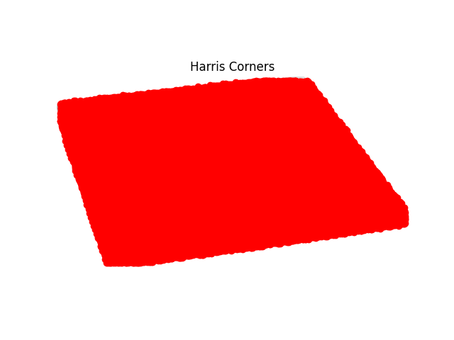

In this project, most of the images are taken from a iPhone 13 Pro.
Some of the images are taken with a digital camera.
Here are some examples of the images used in this project.
Shout out to my partner Yilun for
providing
the amazing photo at Meteor Crater, Arizona.
Go check out his other amazing photos!
Recover Homographies
How It Works
Similar to Project 3, we need to find the best warp
between two images.
The goal is to find $$\mathbf{H} = \begin{bmatrix}a & b & c \\ d & e & f \\ g & h & 1\end{bmatrix}$$
such that $$\mathbf{H} = \mathrm{arg} \min_\mathbf{H} \sum_{(\mathbf{x}, \mathbf{x'}) \in
\mathcal{D}} \Vert \mathbf{Hx} -
\mathbf{x'}\Vert_2^2$$
where $\mathbf{x} = \begin{bmatrix}x & y & 1\end{bmatrix}^T$ and $\mathbf{x'} = \begin{bmatrix}wx' &
wy' & w\end{bmatrix}^T$.
Here, $\begin{bmatrix} x & y \end{bmatrix}$ and $\begin{bmatrix} x' & y' \end{bmatrix}$ are the
coordinates of the feature points in the source and destination images.
$w$ is the scaling factor.
$\mathcal{D}$ denotes the set of pairs of feature points in the two images.
We can rewrite this into a least squares problem on the parameters in $\mathbf{H}$.
For each pair of feature point $\mathbf{x}_i$ and $\mathbf{x}_i'$,
$$\underbrace{\begin{bmatrix} x_i & y_i & 1 & 0 & 0 & 0 & -x_i x_i' & -y_i x_i' \\ 0 & 0 & 0 & x_i &
y_i
& 1 & -x_i y_i' & -y_i y_i'\end{bmatrix}}_{P_i}
\begin{bmatrix}a \\ b \\ c \\ d \\ e \\ f \\ g \\ h\end{bmatrix} = \underbrace{\begin{bmatrix}x_i'
\\
y_i'\end{bmatrix}}_{v_i}$$
Stack $P_i$'s and $v_i$'s vertically, and we get a classical least squares problem, whose solution
is
given by $(P^T P)^{-1} P^T v$.
Defining correspondences
Much like Project 3, we need to manually label the key features of the images before we can find the
homography.
Note that the images are labeled pairwise, so the features selected in each pair can be different,
even though they are taken from the same scene.
This is a laborious process, especially if the image chain is long.
As an example, below are the manually selected feature pairs of the Meteor Crater photos, with
feature points marked as red dots.
Image Rectification
One straightforward way to test the algorithm is image rectification.
Below is an image of a checkerboard and the location of the vertices of the middle 6x6 squares
(annotated with green points).
We want to warp the image such that the vertices form a perfect square.
The desired location of the annotated points in the warped image are marked in red points.
The estimated region after the warp is highlighted with its vertices marked in
blue points.
Annotated checker board and estimated warp result.
And here is the result of actually warping the entire image.
Warped checker board. Note the canvas was enlarged just
enough to keep both the original and warped image. This will be useful in blending images after
warping.
Below is another example.
Yilun giving a talk.
Annotation and the desired warp.
Warped image.
Closer look of Yilun's slides after rectification. Super cool work!
Blending the Images into a Mosaic
With the feature points from manual annotation, we can recover the homography between two images
and recursively blend them into a growing mosaic.
Note that the homography can be accumulated, and therefore warping from image $A \rightarrow C$
can be achieved by the composition of $A \rightarrow B$ then $B \rightarrow C$.
Utilizing this fact, we first label each pair of adjacent images and get the estimated
homography matrix.
Then, we warp all images towards the center image.
Below are the step-by-step process of warping.
1. Meteor Crater Natural Landmark (photo by Yilun Ma)
Warping and blending the left image to the center.
Warping and blending blend the right image to the
previous result.
So far, we're just taking the average between the overlapping area, and the boundary of the
original images are very clearly visible.
To get smoother blending, we adopt Lowe's two-band blending technique, where we create a simple
two-level pyramid of the image, and use a smooth alpha channel to blend the low frequency and a
binary alpha channel for the high-frequency.
Below is the comparison between the results.
With two-band blending, the edges are gone, and the details of the center image are sharper.
However, this blending technique still left a faint shadow in the corners, which is discernible
if the color is monotonous and the exposure between photos are different.
Average mixture.
Two-band blending.
More results
2. San Francisco from Berkeley Marina on a Cloudy Day
Original Images
Annotating and Pre-warping
Remember that the middle image, marina (2), is the reference and therefore doesn't warp!
Warping and Blending
Warping and blending the right image to the center.
Warping and blending the left image to the previous result.
Final Result
Interesting fact: This set of images turned out very hard for the automatic
stitching algorithm.
One possible reason is that there are very few significant features in the majority of the
image.
Plus, the water and the sky are not entirely stationary!
This only worked by putting most of the feature points on the buildings, which seems
insignificant in the sense of corners.
3. Petroglyph National Monument, New Mexico
Original Images
Annotating and Pre-warping
Warping and Blending
Final Result
Spoiler: Note that there is very little overlap between the two images, so the
error in the annotation has a much more significant impact on the result.
In the later section, we'll see the automatic stitching does a much more precise job than I did.
Feature Matching and Auto-stitching
Instead of manually labeling the images, we seek ways to automatically find interesting features
and find correspondences among them.
The second part of the project is about the algorithm to achieve this.
Harris Corner Detector
From the first part of the project, we learn that corners can be used as easily identifiable
features.
Here, we use the Harris
interest point detector to find all the corners of an image.
Below is the Harris corner measure of the checkerboard image.
The checker board image.Harris corner measure of the checker board image.
Pay close attention and you'll see an array of brighter dots. Those are the vertices of the
squares!

Harris corners.
The result has been filtered to only keep pixels whose corner response is larger than some
threshold.
However, this is clearly far from enough.
Adaptive Non-Maximal Suppression (ANMS)
One idea is to keep only the pixels with the largest corner response.
However, Brown et al. pointed out that
this leads to an imbalance in the spatial distribution of
feature points.
Instead, we adopt Adaptive Non-Maximal Suppression (ANMS) to select $N$ points that has the largest
corner response within the radius of $r$, where $r$ is maximized across the entire image.
Below is the result of applying ANMS on the checker board image with $N = 60$.
We can see from this example that the result of ANMS are indeed the vertices of the squares on the
board.
Also, some of the vertices are not selected because they're would have been too close to their
neighbors, which shows that ANMS is effective in ensuring the points are spatially well-separated
from each other.
Feature Descriptor Extraction
With the Harris corner detector and the ANMS algorithm, we can already automatically extract
interesting features from images.
The next step is to match between them.
Following Brown's paper, we crop out a 40x40 window around each feature point, and downsample them
to 8x8 patches.
Below are example of patches that are sampled from the checker board image.
Feature descriptors examples from the checker board image.
They may look alike because of the repetitive nature of the checker board pattern.
This will no longer be the case for our images!
Feature Matching
Finally, we will compare the patches from the two images we're trying to stitch together and find
matches.
Assume our goal is to find the best match in the target image $B$ for each patch in the source image
$A$.
We start by finding the top 2 matches for all patches in the source image $A$.
Here we apply Lowe's thresholding criteria and compare the ratio between the error of 1-NN/2-NN.
For good matches, this ratio should be low.
In Brown's paper, the optimal threshold for the squared error between 1-NN/2-NN appears to be 0.1,
but with the RANSAC algorithm, it's acceptable to be more lenient with
thresholding at this step.
Here is one example with two images taken from Yosemite.
Feature matching between two images taken at Yosemite.
The transparent green points are all feature
points selected by the Harris corner detector and ANMS.
The red points are the matched points selected
through matching the feature descriptors.
Random Sample Consensus (RANSAC)
From the example above, we can see most of the points are indeed valid matches.
However, there are still outliers, which is undesirable because least squares optimization is
sensitive to outliers.
To find the best homography $H$, we implemented Random Sample Consensus
(RANSAC), an outlier detection algorithm.
In RANSAC, we iteratively select four random pairs of points and compute the
homography $H$.
Then, we apply the transformation on all feature points $\mathbf{x}$ in the source image $A$, and
count the number of near matches with the points in image $B$.
The goal is to find the homography that leads to the most number of near matches. In other words,
$$H^{*} = \mathrm{arg} \max_H \vert \{ (\mathbf{x}, \mathbf{x'}) \vert \Vert \mathbf{Hx} -
\mathbf{x'} \Vert < \epsilon \}\vert$$
In the example above, after 100000 iterations, the best set of points found by the RANSAC algorithm
is as follows.
The best set of feature pairs found by RANSAC. $\epsilon = 1$.
Producing Mosaics
Now that we have the feature pairs, we can use the same warping procedure
to stitch the images together.
Annotated image and expected warping.
Result of Auto-stitching the Yosemite images.
More results
2. Petroglyph National Monument, New Mexico
Original Images
Matched points with RANSAC
Automatic Stitching (and comparison with manual results)
Result of automatic stitching.
Result of manual stitching.
Look closely in the overlapping area.
There is very little misalignment in the automatic stitching result, whereas the overlapping area is
a bit blurry in the manual result.
This shows that the automatic labeling and feature matching did a very precise job in locating and
matching the features.
3. Meteor Crater National Landmark (photo by Yilun Ma)
Original Images
Matched points with RANSAC
Automatic Stitching (and comparison with manual results)
Similar to the example above, manual stitching is less precise than automatic stitching.
While both results are quite acceptable, there are less ghosting in the automatically stitched
image.
4. Stitching together more images: MPC Lab
Original Images
Matched points with RANSAC
Automatic Stitching
2-image mosaic.
3-image mosaic.
4-image mosaic.
5-image mosaic.
All images are mostly aligned at first sight, but note how the ghosting effect becomes
increasingly significant as more images are stitched together, especially in the middle
where there's the most overlapping.
Furthermore, we noticed that the center of the image is well-aligned, but the ghosting
becomes increasingly prominent near the upper and lower edges.
One suspected reason is the distortion caused by the lenses, which is the most significant
near the edges.
Another reason is that the images were not taken with an iPhone without a tripod, meaning
the center of projection is not exactly the same.
Concluding Thoughts
The coolest thing I learned from this project is RANSAC.
This is a perfect example of how the collective wisdom can surpass that of an expert.
Also, this also gave me new inspirations on how to identify outliers to get better data.
.png)
.png)
.png)
.jpg)
.jpg)
.jpg)
.jpg)
.jpg)
.jpg)
.jpg)
.jpg)
_crater_cropped%20(2)_manually_annotated.png)
_crater_cropped%20(3)_manually_annotated.png)


.jpg)
.jpg)
.jpg)
_annotated.png)
_annotated.png)


_annotated.png)

_yosemite%20(2)_Feature_Matching.png)
_yosemite%20(2)_Feature_Matching_with_RANSAC.png)
_annotated.png)
_new_mexico%20(2)_feature_matching.png)

_crater_cropped%20(2)_feature_matching.png)
_crater_cropped%20(3)_feature_matching.png)


.jpg)
_mpc_lab%20(2)_feature_matching.png)
_mpc_lab%20(3)_feature_matching.png)
_mpc_lab%20(4)_feature_matching.png)
_mpc_lab%20(5)_feature_matching.png)


{kind=link}